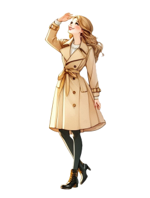
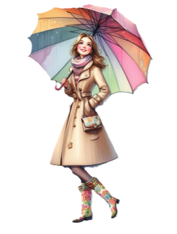
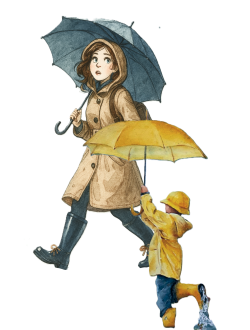

Sol over Fløyen – ta med kaffe på termos og finn en benk med utsikt.

Det regner i Bergen – byen speiler seg vakkert i vannet.
Snø over fjellene – perfekt dag for Fløybanen og aketur.
Overskyet, men tørt – perfekt for en tur i Skostredet.

Torden ruller over fjellene – kanskje en konsert i Grieghallen?